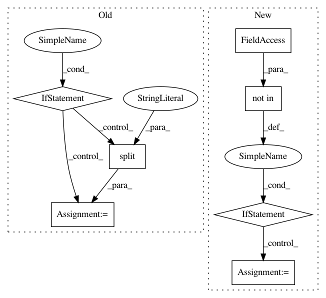

69ff07c2bf368ebc0d6f0700a9735451ed851999,w3af/plugins/audit/global_redirect.py,global_redirect,_javascript_redirect,#global_redirect#Any#,173
Before Change
location.replace("http://www.w3af.com/");
res = self._script_re.search(response.get_body())
if res:
url_group_re = "(%s)" % "|".join(self.TEST_URLS)
for script_code in res.groups():
script_code = script_code.split("\n")
code = []
for i in script_code:
code.extend(i.split(""))
for line in code:
if re.search("(window\.location|location\.).*" + url_group_re, line):
return True
return False
def get_long_desc(self):
After Change
window.navigate("http://www.w3af.org");
for statement in self._extract_script_code(response):
if self.TEST_DOMAIN not in statement:
continue
for redir_to_test_domain_re in self.REDIR_TO_TEST_DOMAIN_JS_RE:
if redir_to_test_domain_re.search(statement):
return True
return False
def get_long_desc(self):
In pattern: SUPERPATTERN
Frequency: 3
Non-data size: 7
Instances
Project Name: andresriancho/w3af
Commit Name: 69ff07c2bf368ebc0d6f0700a9735451ed851999
Time: 2018-01-02
Author: andres.riancho@gmail.com
File Name: w3af/plugins/audit/global_redirect.py
Class Name: global_redirect
Method Name: _javascript_redirect
Project Name: pyinstaller/pyinstaller
Commit Name: 3e84d5c116b50185d5c04029fa9bc1295a9dcbbf
Time: 2021-03-23
Author: rok.mandeljc@gmail.com
File Name: PyInstaller/hooks/rthooks/pyi_rth_pkgres.py
Class Name: PyiFrozenProvider
Method Name: embedded_tree
Project Name: snipsco/snips-nlu
Commit Name: 5cb31b24772202d34175b7c7f42c6b1792dd6dd4
Time: 2017-03-31
Author: adrien.ball@snips.net
File Name: snips_nlu/preprocessing.py
Class Name:
Method Name: language_stems